← Index · ← Previous · Next →
Authors: Simon M. Fischer, Martin Gazo, Sebastian J. Morris, Nikolai Maslov, Haoyu Zhang, Jiří Etrych, Gevorg Martirosyan, Christoph Eigen, Zoran Hadzibabic
Type: experiment · Category: quantum gases · PDF: https://arxiv.org/pdf/2605.22906v1
Analysis basis: full PDF text, analyzed in chunks
Topic relevance: 🔥 non-equilibrium dynamics 4/5 · 🔥 non-equilibrium universality 4/5
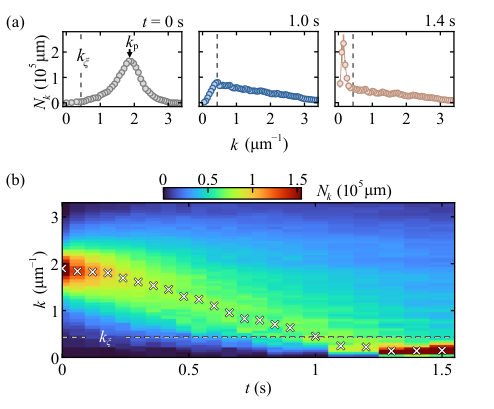
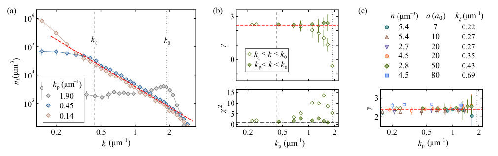
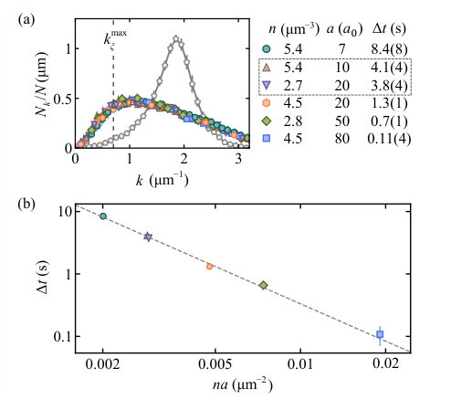
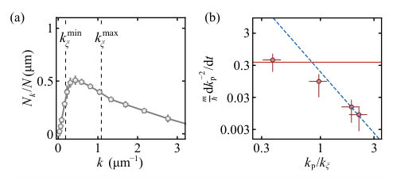
Summary. This study experimentally demonstrates that the initial relaxation of a far-from-equilibrium Bose gas is governed by Weak Wave Turbulence. It shows that particle transport follows a universal power-law distribution and scaling laws that act as a precursor to the later stage of universal coarsening.
Why it may be interesting. This paper provides a direct experimental link between the kinetic regime of weak wave turbulence and the late-time universal coarsening dynamics, offering a complete picture of non-equilibrium many-body relaxation.
Main problem. Understanding the relaxation and condensation dynamics of a far-from-equilibrium, homogeneous Bose gas, specifically identifying the universal description of the initial stage of particle transport that precedes universal coarsening.
Main result. The researchers demonstrate that the initial stage of particle transport follows a universal Weak Wave Turbulence (WWT) description, characterized by a power-law momentum distribution with exponent gamma = 2.4(1) and transport times scaling as (na)^-2.
Method. The study uses an experimental platform of 39K atoms in an optical box trap, evolving the gas by tuning the s-wave scattering length via Feshbach resonance and monitoring the time-dependent momentum distribution.
Model / system. A homogeneous, low-energy, far-from-equilibrium Bose gas of 39K atoms held in a cylindrical optical box trap with tunable density and interaction strength.
Key observables. Spectral population density N_k(k), momentum distribution n_k, peak momentum k_p, and the exponent gamma.
Important parameters / regimes. Density n, s-wave scattering length a, healing length xi, and the WWT vs. coarsening regimes.
Figures summary. Fig 3(a) shows identical N_k/N curves for different n and a; Fig 3(b) plots transport time delta t versus na; Fig 4(a) shows the evolution of the gas momentum distribution.
Paper structure. The paper introduces the problem of Bose gas relaxation, describes the experimental setup with 39K atoms, presents the observation of WWT scaling in momentum distributions and transport times, and concludes by showing the transition from WWT to the universal coarsening regime.
Relaxation and condensation of an isolated low-energy Bose gas provide an ideal setting for the study of the universal features of far-from-equilibrium many-body dynamics and the emergence of long-range order. Conceptually, the emergence of such order involves two steps: the formation of local coherence, on a system-specific microscopic lengthscale, and the spreading of coherence, over lengthscales much larger than any microscopic scale. The latter is understood in terms of universal phase-ordering kinetics, or coarsening, characterized by an algebraic growth of the coherence length. Here, for a homogeneous Bose gas with tunable interactions, we show that the former also has a universal description, within the framework of weak wave turbulence (WWT). Specifically, the initial transport of particles to low momenta corresponds to an inverse turbulent cascade that is, in agreement with the WWT theory, characterized by a power-law momentum distribution, with exponent $γ= 2.4(1)$, and transport times ${\propto} (na)^{-2}$, where $n$ is the gas density and $a$ the $s$-wave scattering length.
Authors: Michael Hite, Pooja Siwach
Type: theory · Category: numerical methods · PDF: https://arxiv.org/pdf/2605.23584v1
Analysis basis: full PDF text, analyzed in chunks
Topic relevance: 🔥 entanglement & information structure 4/5 · non-equilibrium dynamics 3/5
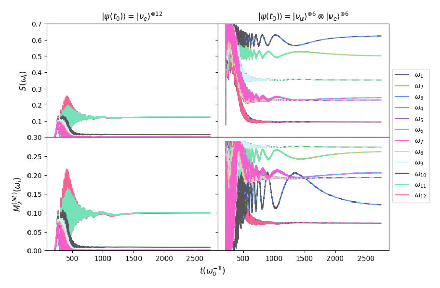
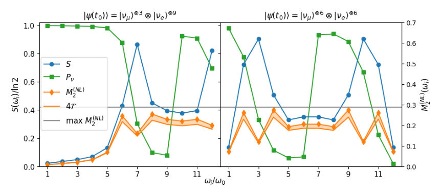
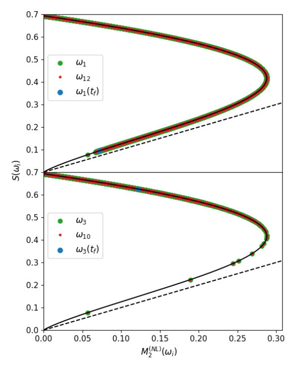
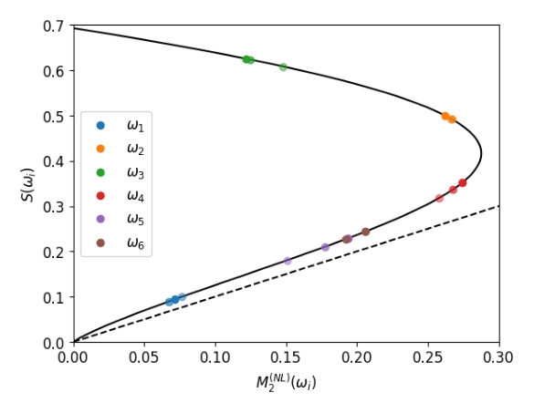
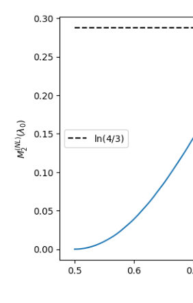
Summary. This paper demonstrates that the emergence of spectral splits in dense neutrino gases is driven by a specific redistribution of entanglement and non-local magic. By mapping these dynamics in a quantum resource phase space, the authors show that splits occur at the intersection of maximal entanglement and minimal non-local complexity. These findings provide a roadmap for optimizing both classical tensor network and future quantum circuit simulations of neutrino environments.
Why it may be interesting. It provides a quantitative link between abstract quantum information measures (like magic and entanglement) and observable astrophysical phenomena, offering insights into how complexity landscapes dictate the efficiency of many-body simulations.
Main problem. The study investigates how the redistribution of quantum resources, specifically entanglement and non-local magic, drives the emergence of spectral splits in dense neutrino gases.
Main result. Spectral splits arise from a structured redistribution of quantum resources where bipartite entanglement is maximized and non-local magic is locally minimized, rather than from generic complexity growth.
Method. The authors use tensor network simulations, specifically Matrix Product States (MPS) with the Time-Dependent Variational Principle (TDVP) and Global Subspace Expansion (GSE).
Model / system. A dense, two-flavor N-neutrino system modeled by an all-to-all spin Hamiltonian in the mass basis, representing neutrino-neutrino forward scattering in core-collapse supernovae.
Key observables. Entanglement entropy, non-local magic (non-stabilizerness), MPS bond dimension, spectral splits (flavor swaps), and antiflatness.
Important parameters / regimes. Neutrino-neutrino interaction strength (mu), vacuum oscillation frequency (omega), system size (N=8, 12, 14), and initial flavor configurations.
Assumptions / limitations. The study focuses on the two-flavor sector and utilizes bond dimension truncation as a proxy for computational complexity.
Figures summary. Figures show the dynamics of entanglement and magic, trajectories in the entanglement-magic phase space, the relationship between resource metrics and bond dimension, and asymptotic values of flavor survival probability across different system sizes.
Paper structure. The paper introduces the problem of resource organization, describes the neutrino Hamiltonian and tensor network methods, presents results on resource redistribution and phase space dynamics, and concludes with implications for classical and quantum simulations.
Whether a quantum many-body system can be efficiently simulated hinges not only on its size but also on how quantum resources are organized within it. We characterize the quantum resource landscape of collective neutrino oscillations using entanglement entropy, non-local magic, and matrix product state bond dimension. Using tensor network simulations of neutrinos in the two-flavor sector, we demonstrate that spectral splits--sharp energy-dependent flavor swaps--emerge precisely where entanglement entropy is maximized and non-local magic is minimized locally. This anticorrelation reveals that spectral splits arise not from generic resource growth but from a structured redistribution among flavor modes. The resource dynamics trace constrained arcs in the entanglement-magic phase space, bounded by entanglement spectrum normalization. These findings establish a direct, quantitative link between quantum resources governing computational complexity and astrophysical observables, informing the design of tensor network and quantum circuit simulations of dense neutrino environments.
Authors: Qifan Huang, Minbo Gao, Li Zhou, Mingsheng Ying
Type: theory · Category: quantum information and computing · PDF: https://arxiv.org/pdf/2605.23358v1
Analysis basis: full PDF text, analyzed in chunks
Topic relevance: 🔥 methods for driven-dissipative 4/5 · non-equilibrium dynamics 2/5
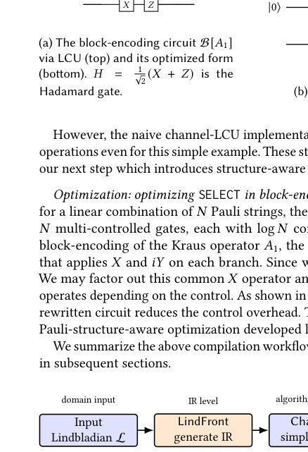
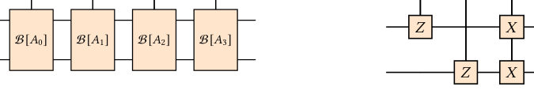
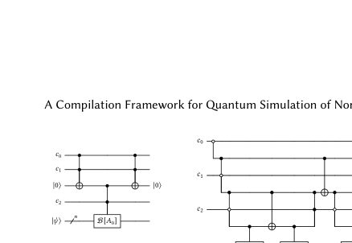
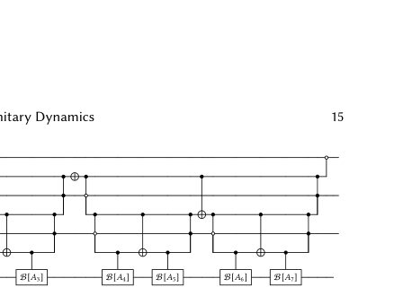
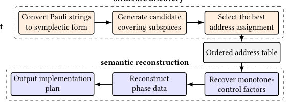
Summary. This paper introduces a new compilation framework that treats quantum channels as primary objects rather than decomposing them into unitaries prematurely. By using a specialized intermediate representation, it enables algebraic optimizations that drastically reduce the gate and ancilla overhead for simulating open quantum systems.
Why it may be interesting. It provides a specialized compilation infrastructure for simulating dissipative and decohering processes, which is essential for modeling realistic many-body dynamics and open quantum systems on near-term and fault-tolerant hardware.
Main problem. Existing quantum compilers are optimized for unitary (closed-system) circuits, making them inefficient for simulating open-system dynamics where non-unitary quantum channels are the natural objects.
Main result. The proposed ChannelIR framework achieves up to a 99% reduction in gate count and significantly improves compilation scalability compared to traditional circuit-first Stinespring dilation methods.
Method. A channel-first compilation pipeline using a hierarchical intermediate representation (ChannelIR) that supports Kraus form and Pauli-sum structures, combined with algebraic rewriting and structure-aware circuit synthesis (LCU and channel-LCU).
Model / system. The framework models open quantum systems using Lindbladian master equations, representing continuous-time dynamics through Kraus operator-sum representations and short-time channel approximations.
Key observables. Gate count (CX, T, etc.), circuit depth, qubit count (width), and trace distance error.
Important parameters / regimes. Markovian dynamics, Lindbladian generators, and simulation error tolerances.
Assumptions / limitations. The dynamics are assumed to be Markovian, and the framework focuses on the high cost of non-Clifford (T) gates in fault-tolerant computing.
Figures summary. Figures illustrate the ChannelIR Kraus form, circuit optimization for block-encoding, the complete compilation workflow, the syntax of the IR, and performance comparisons of gate counts and simulation errors against theoretical bounds.
Paper structure. The paper introduces the problem of abstraction mismatch, presents the ChannelIR framework and its algebraic rewrite rules, details the LindFront frontend and circuit synthesis backend, provides formal proofs for rule correctness and optimization complexity, and concludes with benchmarks on Lindbladian simulation and scalability.
Most quantum compilers assume programs are reversible unitary circuits. This fits closed-system algorithms, but not open-system simulation, where the natural program objects are quantum channels describing non-unitary dynamics. We present a channel-first compilation framework that treats channels as first-class compilation objects. Our core IR, ChannelIR, represents channels explicitly in Kraus form, a standard channel representation, with Pauli-sum structure, enabling algebraic rewrites before circuit synthesis. We instantiate the framework with LindFront, a frontend that lowers continuous-time Lindbladian generators to short-time channels, and a backend that compiles these channels to executable circuits with structure-aware optimizations. On Lindbladian and channel-simulation benchmarks, the optimized pipeline reduces gate count by up to 99% over an unoptimized channel-first baseline and scales better than circuit-first Stinespring compilation.
Authors: Lingna Wang, Hongzhen Chen, Haidong Yuan
Type: theory · Category: quantum information and computing · PDF: https://arxiv.org/pdf/2605.23514v1
Analysis basis: full PDF text, analyzed in chunks
Topic relevance: 🔥 quantum measurements 4/5 · entanglement & information structure 2/5
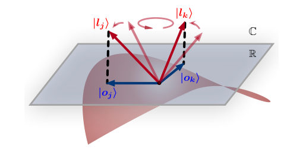
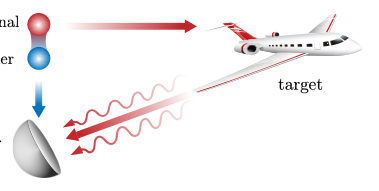
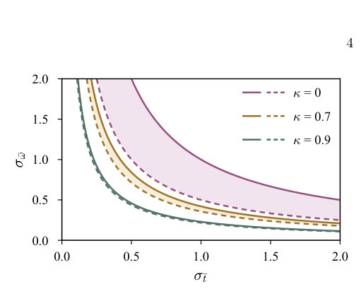
Summary. This paper establishes a new analytical bound that quantifies the precision loss in multiparameter quantum estimation caused by measurement incompatibility. It also introduces a systematic way to design optimal measurements that reach these limits, demonstrated through a refined uncertainty relation for quantum radar.
Why it may be interesting. It provides a fundamental tool for quantum metrology and sensing, specifically addressing how to optimize simultaneous measurements in the presence of non-commuting observables, which is critical for quantum-enhanced sensing technologies.
Main problem. The fundamental difficulty in simultaneous multiparameter quantum estimation due to the incompatibility of optimal measurements, which creates a precision gap between achievable and ultimate quantum limits.
Main result. The derivation of a new tight analytical bound for the precision trade-off in pure state estimation and a systematic methodology for designing optimal measurements that saturate this bound.
Method. A geometric approach using the complex geometric tensor (combining QFI and Berry curvature) and an optimization strategy that models POVMs as projective measurements on an augmented system-ancilla state.
Model / system. The framework is applied to pure quantum states and specifically demonstrated using a quantum radar model involving entangled biphotons used for simultaneous range and velocity estimation.
Key observables. Quantum Fisher Information matrix (F_Q), imaginary part of the geometric tensor (F_Im), and the precision metric Gamma.
Important parameters / regimes. Number of parameters (n), entanglement parameter (kappa), and the eigenvalues (lambda_q) of the normalized incompatibility matrix.
Assumptions / limitations. The primary focus is on pure quantum states and the assumption that parameters are locally identifiable (invertible QFI).
Figures summary. Figure 1 provides a geometric visualization of measurement incompatibility; Figure 2 shows a schematic of a quantum radar setup; Figure 3 plots uncertainty relations for different entanglement levels.
Paper structure. The paper introduces the problem of measurement incompatibility, presents a new analytical bound for precision trade-offs, provides a constructive method for optimal measurement design, and validates the theory through a quantum radar application.
A fundamental challenge in multiparameter quantum estimation arises from the incompatibility of optimal measurements for different parameters, leading to intricate precision trade-offs that obscure the understanding of ultimate quantum limits. Here, we present an approach that precisely quantifies these trade-offs for an arbitrary number of parameters encoded in pure quantum states. Our approach not only derives tight analytical bounds for the trade-offs induced by measurement incompatibility but also provides a systematic methodology to design optimal measurement strategies that saturate these limits. To demonstrate the practical significance of our findings, we apply our framework to quantum radar and obtain a refined Arthurs-Kelly relation that characterizes the ultimate performance for the simultaneous estimation of range and velocity with any given amount of entanglement. This showcases the transformative potential of our findings for a wide range of applications in quantum metrology, sensing, and beyond.
Authors: Gurbir Arora, Matthew Headrick, Albion Lawrence, Martin Sasieta, Brian Swingle, Connor Wolfe
Type: theory · Category: numerical methods · PDF: https://arxiv.org/pdf/2605.23670v1
Analysis basis: full PDF text, analyzed in chunks
Topic relevance: 🔥 entanglement & information structure 4/5 · methods for driven-dissipative 2/5
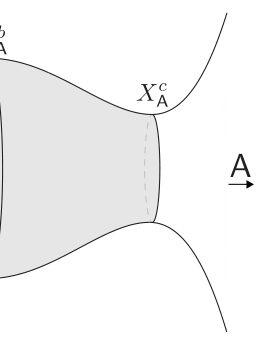
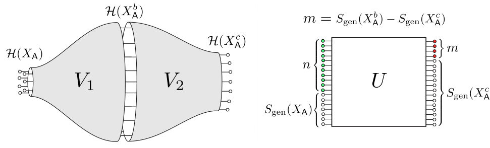
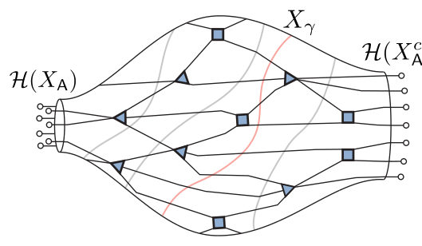
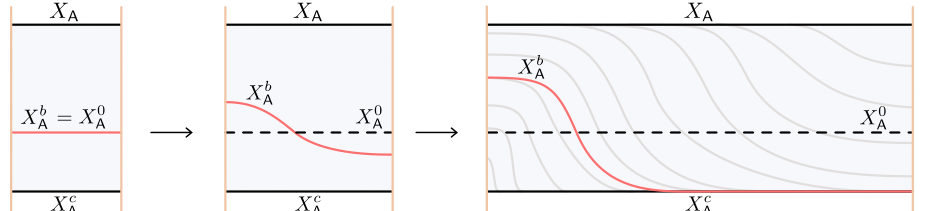
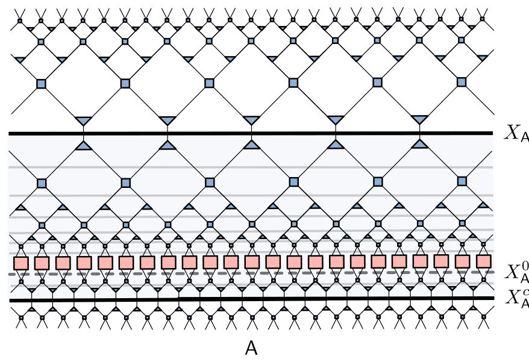
Summary. The paper identifies that standard random tensor networks fail to accurately model the complexity predicted by the Python's Lunch Conjecture due to a lack of computational covariance. To fix this, the authors introduce 'twirled perfect tensor networks' which successfully recover the predicted complexity bounds and maintain holographic properties. This provides a more robust framework for studying the computational complexity of black hole interiors.
Why it may be interesting. not directly relevant
Main problem. Investigating the discrepancy between the Python's Lunch Complexity (PLC) prediction and the complexity of generic tensor network models, specifically addressing the lack of computational covariance in standard random tensor networks.
Main result. The authors propose a new class of 'twirled perfect tensor networks' that satisfy computational covariance, thereby aligning the complexity of the network with the PLC prediction and obeying a lattice Ryu-Takayanagi formula.
Method. The study uses geometric analysis (min-max theory, Mean Curvature Flow), random matrix theory (Wishart matrix analysis, Marchenko-Pastur law), and complexity quantification via circuit complexity and isometry decomposition.
Model / system. The paper focuses on holographic tensor network models (including Random Tensor Networks, MERA, and MPS) representing the 'Python's Lunch' geometry in AdS/CFT, characterized by a bulge and a constriction in the entanglement wedge.
Key observables. Python's Lunch Complexity (PLC), entanglement entropy (von Neumann and generalized), circuit complexity, and the Morse index of extremal surfaces.
Important parameters / regimes. Large N limit, large bond dimension limit, Markov length, and the ratio of dimension between input and output ancilla qubits.
Assumptions / limitations. The analysis primarily focuses on time-symmetric settings and the regime where the area term dominates the generalized entropy; it also assumes a compact and connected manifold for geometric proofs.
Figures summary. Figure 1 shows the Python's Lunch geometry with minimal, bulge, and outermost surfaces; Figure 2 illustrates the tensor network model and the map as a postselected unitary; Figure 3 shows the foliation and cuts; Figure 18 compares different length scales.
Paper structure. The paper begins by identifying the failure of random tensor networks to match PLC predictions, introduces the concept of computational covariance, proposes the twirled perfect tensor network model, proves its properties using geometric and statistical tools, and concludes with discussions on limitations and implications for holography.
We define a novel class of tensor networks motivated by the Python's Lunch Conjecture (PLC) in local tensor network models of the black hole interior. We start from the observation that, for extended black brane states with short-range correlations, the PLC predicts a complexity that is smaller than the upper bound for generic short-range correlated states. We argue that the PLC makes implicit assumptions about the fine structure of the relevant tensor networks modeling gravity that render them non-generic. We demonstrate this explicitly in random tensor network models of the python's lunch, where the exponential complexity is not generally controlled by the PLC exponent. We trace the difference with the PLC to a lack of "computational covariance" in random tensor networks: while the PLC is motivated by an ability to arbitrarily decompose space into low-complexity units provided certain basic rules are followed, we show that random tensor networks do not generically have this property. We propose another class of tensor networks built from what we call "twirled perfect tensors" that do satisfy the computational covariance property and have a complexity bounded by the PLC value. We still find a discrete limitation from local postselection that appears to be absent in gravity. Moreover, we show that this class of tensor networks combines desirable holographic features of perfect tensor networks and random tensor networks, for example, it obeys a lattice Ryu-Takayanagi formula for arbitrary boundary subregions. Though motivated by holography, these tensor networks provide a flexible framework with potential applications beyond quantum gravity.
Authors: Ewan Scott, Yaqi Chen, Michael Turaev, Tarkan Yzeiri, Chris Hooley, Krzysztof P. Wójcik, Michał P. Kwasigroch
Type: theory · Category: strongly correlated electrons · PDF: https://arxiv.org/pdf/2605.23755v1
Analysis basis: full PDF text, analyzed in chunks
Topic relevance: 🔥 Kondo & dissipative impurity 4/5
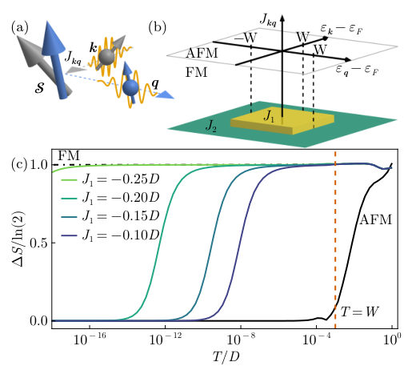
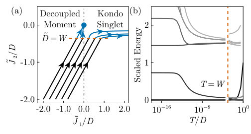
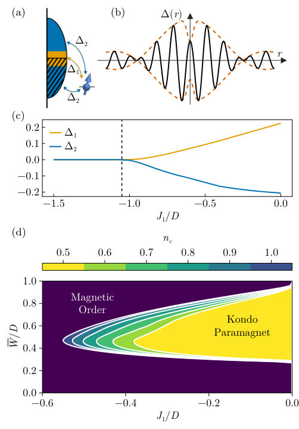
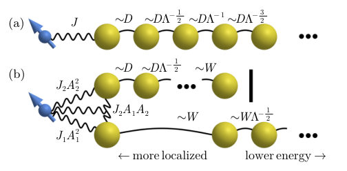
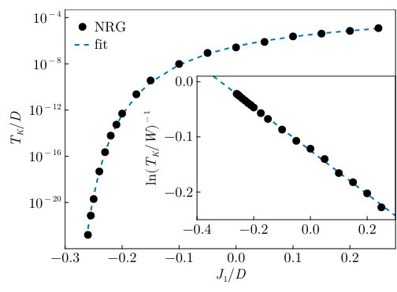
Summary. This paper shows that purely ferromagnetic exchange can lead to a Kondo singlet ground state if the coupling is energy-dependent. This mechanism is an analog of Anderson-Morel superconductivity and can lead to a heavy Fermi liquid state that is preferred over magnetic ordering.
Why it may be interesting. not directly relevant
Main problem. Investigating whether a Kondo spin-singlet ground state can emerge from purely ferromagnetic (FM) spin-exchange coupling between a magnetic impurity and a conduction electron sea.
Main result. The authors demonstrate that an energy-dependent FM coupling can renormalize to an antiferromagnetic (AFM) coupling at low temperatures, leading to a Kondo singlet and a heavy Fermi liquid state in a lattice, effectively creating an 'inverted' Doniach phase diagram.
Method. The study employs perturbative Renormalization Group (RG) to analyze coupling flow and a specialized two-mode Numerical Renormalization Group (NRG) to study the strong-coupling regime.
Model / system. A Kondo model featuring a magnetic impurity coupled to a conduction sea via a non-separable, energy-dependent, and fully SU(2)-symmetric ferromagnetic exchange interaction $J_{kq}$. The model also considers a Kondo lattice of such impurities.
Key observables. Impurity entropy contribution, fixed-point spectrum, hybridization order parameter, and Kondo temperature ($T_K$).
Important parameters / regimes. Exchange couplings $J_1$ and $J_2$, energy window width $W$, bandwidth $D$, and Fermi energy $\epsilon_F$.
Assumptions / limitations. The interaction strength is reduced within a specific energy window $W$ around the Fermi level; the conduction band is treated as two distinct channels (one gapless, one gapped).
Figures summary. Fig 1 shows electron scattering and the structure of $J_{kq}$ and impurity entropy; Fig 2 shows RG trajectories; Fig 3 illustrates the hybridization fields and real-space hybridization dip; Fig 4 shows the modified Wilson chain; Fig 5 plots the Kondo temperature scaling.
Paper structure. The paper introduces the FM coupling problem, presents the energy-dependent Hamiltonian, details the RG and 2-mode NRG methodology, analyzes the single-impurity singlet formation, extends the results to the Kondo lattice (heavy Fermi liquid), and concludes with experimental realization routes.
We consider magnetic impurities coupled to a conduction sea via a fully isotropic ferromagnetic spin-exchange term, the strength of which depends on the conduction-electron modes involved in the scattering. In the single-impurity case we show both analytically and numerically that there exists a parameter regime in which the conventional Kondo effect develops at low temperatures, leading to a singlet ground state. In the case of a lattice of impurities, we show that this leads to a heavy Fermi liquid state that is energetically favored over magnetic ordering in a broad parameter range. We argue that these effects are analogs of Anderson-Morel superconductivity, and discuss routes to their experimental realization.
Authors: Jason Pye, Atharva Hingane, Robert H. Jonsson
Type: theory · Category: quantum information and computing · PDF: https://arxiv.org/pdf/2605.23824v1
Analysis basis: full PDF text, analyzed in chunks
Topic relevance: 🔥 entanglement & information structure 4/5
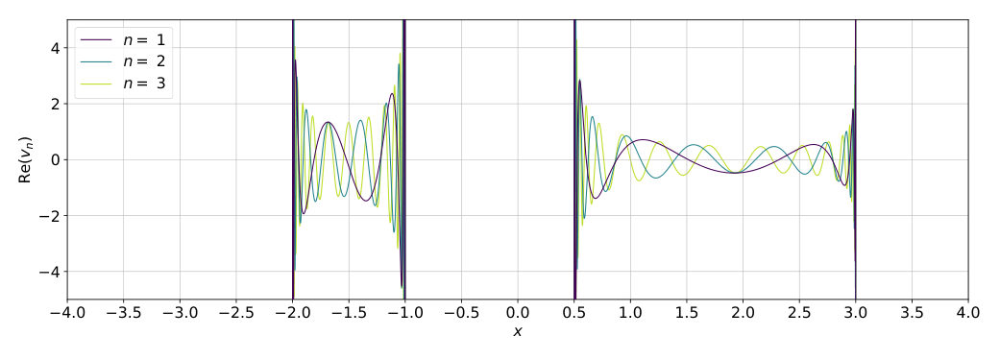
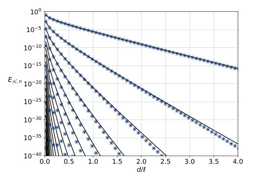
Summary. This paper provides an analytical solution for the entanglement between two disjoint intervals in a 1+1D massless scalar field. It identifies 'negativity cores,' which are the specific localized modes that constitute the entanglement. The results bridge the gap between local field theory and the geometric structure of quantum correlations.
Why it may be interesting. This work provides fundamental insights into the spatial structure of vacuum entanglement and the identification of specific field modes that carry correlations, which is highly relevant for understanding entanglement in continuous variable systems and quantum field theory.
Main problem. The paper aims to provide a complete characterization of the entanglement structure between two bounded, spacelike-separated regions in a (1+1)-dimensional free massless real scalar field, specifically identifying the localized modes that carry the entanglement.
Main result. The authors derive closed-form analytical solutions for the logarithmic negativity and identify the 'negativity cores,' which are the specific localized field modes responsible for the entanglement.
Method. The study employs Gaussian state methods and a framework based on the Kähler structure of Gaussian states, reducing the problem to a boundary value problem in the complex plane involving the diagonalization of an integral operator.
Model / system. A (1+1)-dimensional free massless real scalar quantum field in its vacuum state, where the system consists of two disjoint, bounded intervals on the real axis.
Key observables. Logarithmic negativity (En) and negativity cores (localized smearing functions/modes).
Important parameters / regimes. The cross ratio (eta) characterizing the geometry, the ratio of separation to interval length (d/l), and the large separation (eta -> 0) and small separation (eta -> 1) regimes.
Assumptions / limitations. Observers are assumed to couple only to the derivatives of the field rather than the field amplitude, and the field is assumed to be in its vacuum state.
Figures summary. Figure 1 illustrates the spatial localization of the negativity cores by displaying the real part of the smearing functions for the first three modes.
Paper structure. The paper introduces the problem of vacuum entanglement, defines the (1+1)D scalar field model, presents the analytical derivation of the negativity and its mode decomposition using Gaussian state methods, validates the results with a lattice-based numerical model, and discusses asymptotic scaling regimes.
Vacuum entanglement is a fundamental feature of quantum field theory exhibiting rich structure that is not completely understood. Here, we provide a complete characterization of the entanglement between two bounded spacelike-separated regions in a (1+1)-dimensional free massless real scalar field. Employing Gaussian state methods, we analytically compute the logarithmic negativity and construct closed-form solutions for the localized modes carrying it, called negativity cores. These results deepen our understanding of quantum fields and suggest extensions to higher dimensions and fermionic fields.
Authors: Le-Chuan Wang, Sai Li, Jia Liu, Zheng-Yuan Xue
Type: theory · Category: disordered systems and neural networks · PDF: https://arxiv.org/pdf/2605.23546v1
Analysis basis: full PDF text, analyzed in chunks
Topic relevance: analog quantum simulation 3/5 · non-equilibrium dynamics 3/5 · correlated / nonlocal dissipation 2/5 · driven-dissipative phase transition 2/5 · methods for driven-dissipative 2/5 · non-equilibrium universality 2/5
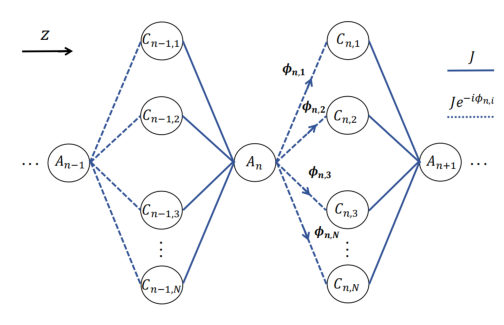
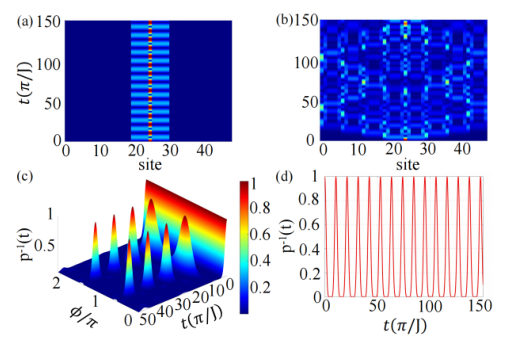
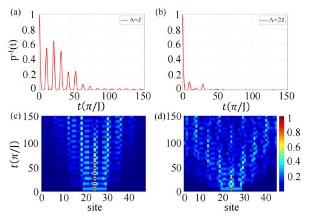
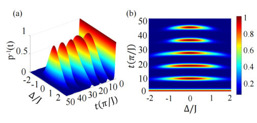
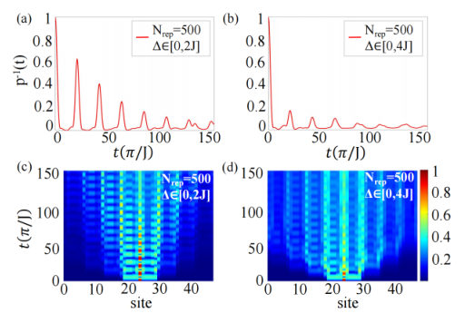
Summary. This paper proposes a method to achieve Aharonov-Bohm caging in lattices with multiple flux parameters, allowing for highly tunable wavefunction localization. It demonstrates that while this caging is a powerful tool for quantum simulation, it is sensitive to environmental perturbations like noise and dissipation. The findings are applicable to various platforms including photonics, superconducting qubits, and trapped ions.
Why it may be interesting. It provides a scalable framework for engineering flat-band localization and explores the 'inverse Anderson transition' where disorder enables transport, which is highly relevant to open quantum systems and many-body dynamics.
Main problem. Investigating the universal conditions for Aharonov-Bohm (AB) caging in multi-flux lattices and exploring how this localization effect is destroyed by disorder, dissipation, and non-Hermitian effects.
Main result. The authors derive universal conditions for AB caging in multi-flux lattices and demonstrate that while the effect is robust to certain configurations, it is cumulatively destroyed by increasing on-site detuning, dissipation, or non-Hermitian hopping.
Method. The study uses theoretical derivation of eigenvalue equations in k-space combined with numerical simulations of photon dynamics and Lindblad master equations to analyze localization and transport.
Model / system. A 1D multi-flux lattice with tunable couplings and gauge fields, applicable to photonic lattices, superconducting circuits (circuit QED), and trapped-ion systems.
Key observables. Inverse Participation Number (IPN), IPN fluctuation (sigma), and group velocity (vg).
Important parameters / regimes. Transition phases (phi), coupling strength (J), disorder strength (Delta), dissipation rate (gamma), and non-Hermitian hopping strength (Gamma).
Assumptions / limitations. The physical realizations assume the validity of the rotating-wave approximation (RWA).
Figures summary. Fig 1 shows the lattice structure; Fig 2 displays numerical simulations of photon localization and transport; Fig 5 shows IPN time evolution under disorder; Fig 6 and 7 present phase diagrams and statistical localization criteria.
Paper structure. The paper introduces the AB caging concept, proposes a scalable protocol for multi-flux caging, validates it via numerical simulations, investigates the impact of disorder and dissipation, and discusses experimental implementations in quantum platforms.
Aharonov-Bohm (AB) caging is the complete wavefunction localization effect in translational-invariant lattices induced by destructive phase interference. These phases originate from the gauge fields such as the penetrated magnetic fields, which are directly related to several novel topological quantum states of matter. Recently, this effect has demonstrated significant potential for applications in quantum simulation and topological quantum computation. Here, we propose a scalable protocol to derive universal conditions for AB caging with multi-flux. The numerical simulations validate the theoretical predictions by directly observing AB caging phenomena. We also investigate the breakage of the caging effect with onsite detuning. Our protocol can be directly tested in several quantum many-body platforms and provides an alternative approach for advancing quantum simulation of exotic state matter.
Authors: Mingran Zhang, Yihe Xu, Vladislav V. Yakovlev, Zhedong Zhang
Type: both · Category: other · PDF: https://arxiv.org/pdf/2605.23639v1
Analysis basis: full PDF text, analyzed in chunks
Topic relevance: non-equilibrium dynamics 3/5 · quantum optics experiment 3/5 · interference shaping light 2/5 · methods for driven-dissipative 2/5 · quantum measurements 2/5 · entanglement & information structure 1/5
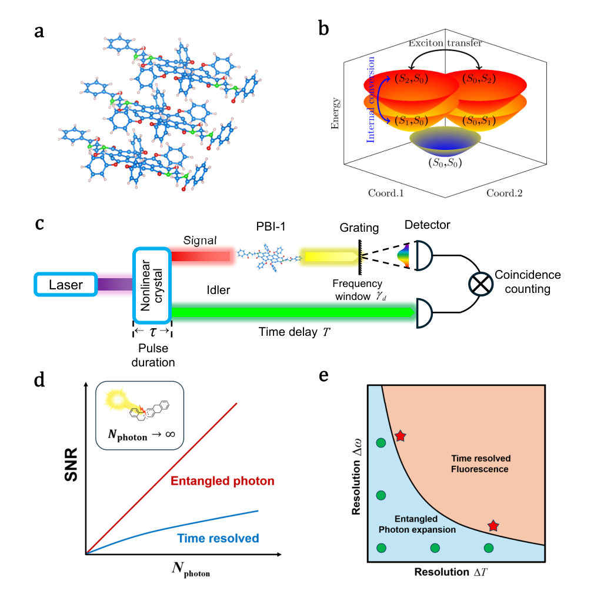
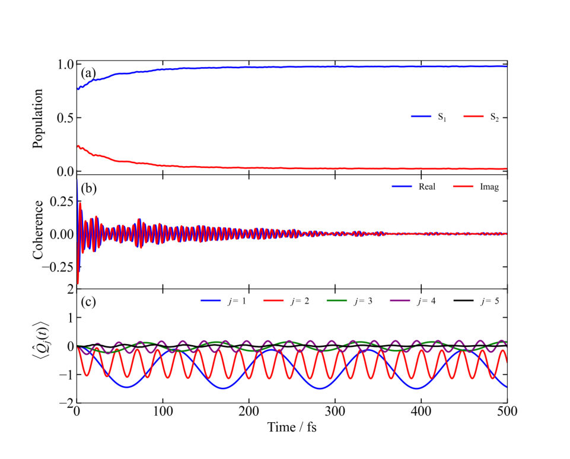
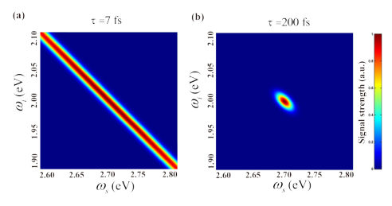
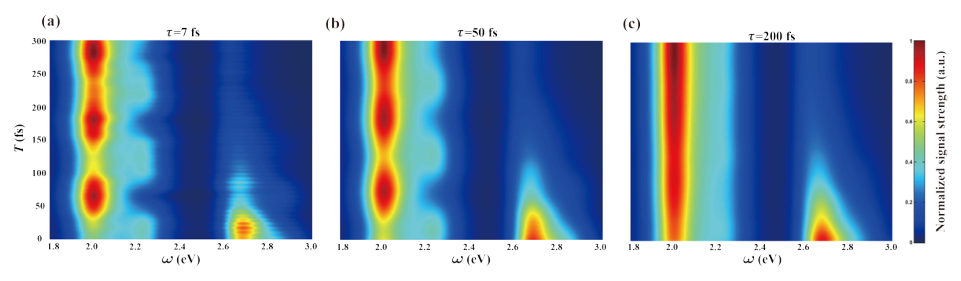
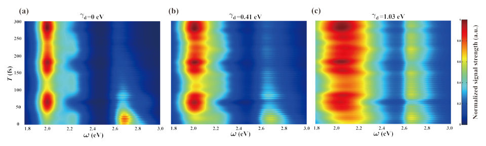
Summary. This paper introduces a quantum ghost spectroscopy technique using entangled photons to overcome the Fourier uncertainty limit in ultrafast spectroscopy. By decoupling temporal and spectral resolutions, the authors reveal hidden electronic-to-vibrational coherence transfer in molecular aggregates. This approach provides a new way to observe high-frequency quantum dynamics that are otherwise obscured in classical measurements.
Why it may be interesting. It demonstrates a quantum-enhanced spectroscopic technique that bypasses fundamental classical limits (Fourier uncertainty) to resolve ultrafast nonadiabatic dynamics, which is highly relevant to quantum optics and open quantum systems.
Main problem. Conventional ultrafast spectroscopy is limited by the Fourier uncertainty principle, creating a trade-off between temporal and spectral resolution that obscures hidden electronic and vibrational coherence dynamics.
Main result. Time-resolved quantum ghost spectroscopy (tr-QGS) using entangled photons enables independent control of time and energy scales, successfully revealing previously hidden 0.7 eV electronic coherence and the subsequent transfer to vibrational coherence.
Method. The study combines a theoretical framework for tr-QGS using fourth-order perturbative expansion with Time-Dependent Density Matrix Renormalization Group (TD-DMRG) simulations.
Model / system. The system consists of perylene bismide (PBI-1) trimers in a dilute solvent, modeled with a Hamiltonian including electronic states (S1, S2), five vibrational modes, and nonadiabatic vibronic coupling.
Key observables. Electronic coherence (rho_S1,S2), population dynamics (S2 to S1 internal conversion), and vibrational coherence (mode position dynamics).
Important parameters / regimes. Electronic energy difference of ~0.7 eV, temporal scales of 5-50 fs for electronic and 200-300 fs for vibrational coherence, and sub-shot-noise sensitivity.
Assumptions / limitations. The derivation relies on the validity of fourth-order perturbative expansion and assumes the initial state is created by the signal photon pulse.
Figures summary. Figure 1 shows the molecular structure, potential energy surfaces, and the tr-QGS experimental setup; Figure 2 shows coherence dynamics; Figure 6 illustrates the comparison between time- and frequency-gated signals.
Paper structure. The paper introduces the Fourier limitation problem, proposes the tr-QGS platform, details the TD-DMRG simulation methodology, presents results on population and coherence dynamics, and discusses broader applications.
Ultrafast spectroscopy of molecular systems is fundamentally constrained by the Fourier uncertainty principle: high temporal resolution smears out electronic state signatures, while high spectral resolution obscures dynamic information. Here we overcome this limitation using time-resolved quantum ghost spectroscopy (tr-QGS) with entangled photon pairs, which enables independent control of temporal and spectral scales. We apply this approach to perylene bismide (PBI-1) trimers for energy transfer,by combining a quantum description of light-molecule interaction with time-dependent density matrix renormalization group (TD-DMRG) simulations. This explicitly includes five vibrational modes and nonadiabatic coupling between electronic states. Our simulations reveal that tr-QGS uniquely captures electronic coherence oscillating at 0.7 eV for >50 fs, a signature of nonadiabatic coupling that was obscured in conventional time-resolved fluorescence due to Fourier-limited broadening. Moreover, we observe a direct transfer from electronic to vibrational coherence at 200 fs, providing real-time visualization of vibronic relaxation pathways. The entangled photon correlation enables a sensitivity below the shot-noise limit and suppresses photobleaching artifacts that plague classical measurements. These results establish tr-QGS as a transformative tool for interrogating nonadiabatic dynamics in molecular aggregates, light-harvesting complexes, and photocatalysts, offering a route to reveal quantum coherence in chemistry with unprecedented time-energy precision.
Authors: Debankur Bhattacharyya, Abraham Nitzan
Type: theory · Category: statistical mechanics · PDF: https://arxiv.org/pdf/2605.23803v1
Analysis basis: full PDF text, analyzed in chunks
Topic relevance: non-equilibrium dynamics 3/5 · Keldysh / 2PI / non-Gaussian methods 2/5 · correlated / nonlocal dissipation 2/5 · methods for driven-dissipative 2/5
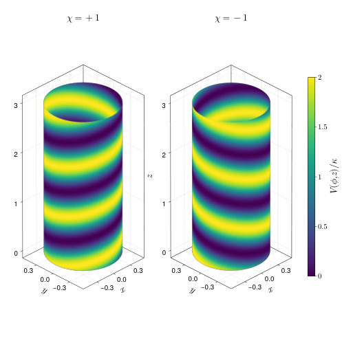
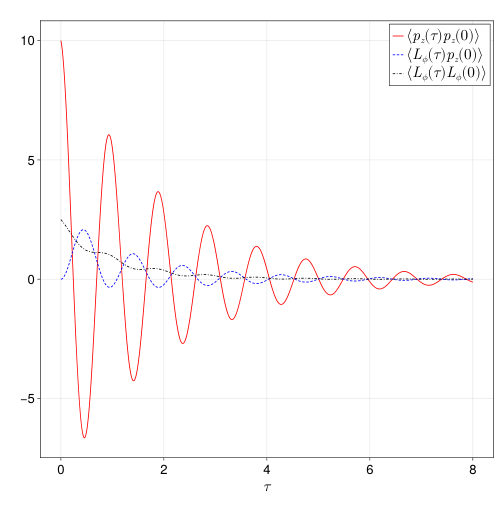
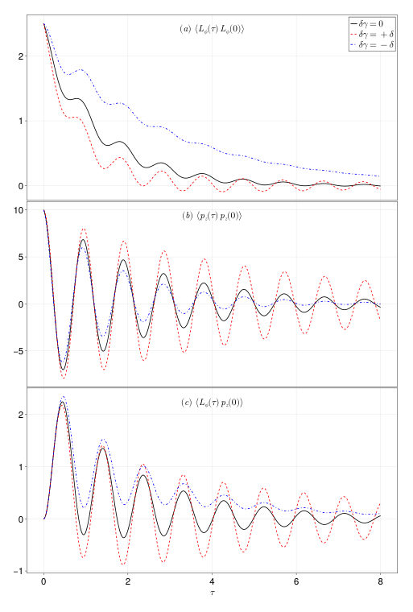
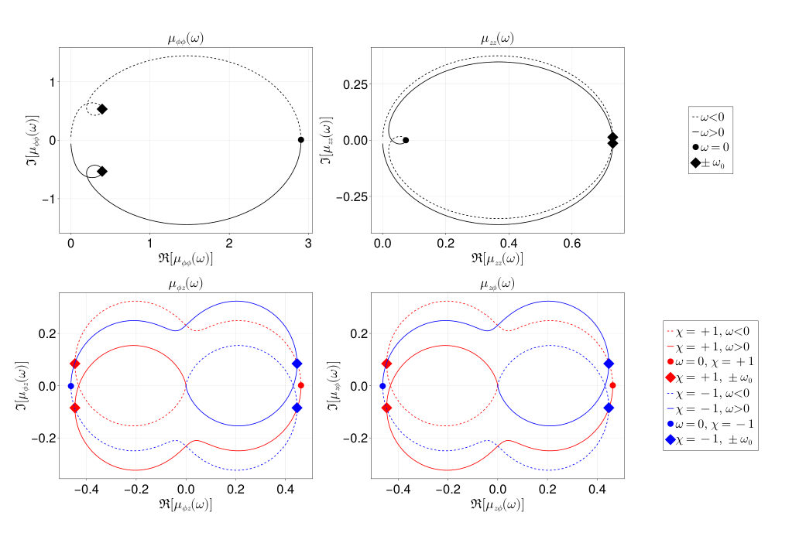
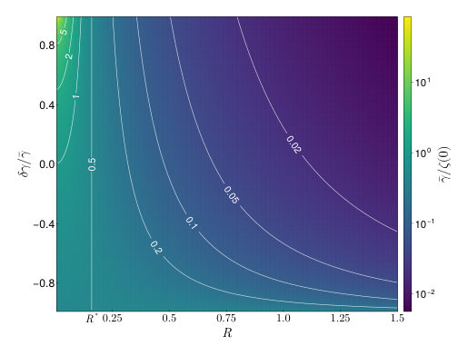
Summary. This paper provides a complete analytical description of how a helical landscape affects the transport and dissipation of a Brownian particle. It demonstrates that the geometry of the landscape creates a direct link between axial and angular motion, which can be detected through cross-mobility and asymmetric energy absorption.
Why it may be interesting. The derivation of transport coefficients and dissipation in a non-stationary, non-equilibrium setting with broken symmetry is highly relevant to researchers studying open quantum systems and driven-dissipative dynamics.
Main problem. Investigating how the helical geometry and damping anisotropy of a landscape influence the Brownian dynamics, mobility, and energy dissipation of an inertial particle.
Main result. The authors derive analytical expressions for the mobility tensor and show that chirality induces cross-response between axial and angular motion, as well as an asymmetry in energy dissipation.
Method. The study employs Langevin dynamics, linear response theory, and a projection operator approach to separate the dynamics into a stable subspace and a diffusive zero-mode.
Model / system. A classical Brownian particle with inertia moving in a 2D helical potential on a cylindrical surface, modeled using a harmonic well approximation and Langevin equations.
Key observables. Dynamical mobility tensor (diagonal and off-diagonal elements), momentum time-correlation functions, and energy dissipation rate.
Important parameters / regimes. Helix handedness (chirality), damping anisotropy, radius-to-pitch ratio, and temperature.
Assumptions / limitations. The potential is approximated as a harmonic well, the particle is structureless, and the system is treated within the framework of Markovian Langevin dynamics.
Figures summary. Figure 1 shows the helical potential landscape; Figure 4 shows momentum correlations; Figure 5 presents Nyquist plots of AC mobility; Figure 6 shows parametric variation of DC mobilities; Figure 7 shows energy dissipation absorption spectra.
Paper structure. The paper introduces the helical model, develops the stochastic framework using coordinate transformations, analyzes the isotropic and anisotropic damping regimes, derives the mobility tensor via linear response theory, and concludes with energy dissipation analysis.
We study the Brownian dynamics and linear response of a particle with inertia moving in a 2-dimensional helical landscape imprinted on a cylindrical surface. In the harmonic well approximation, the deterministic motion separates into free propagation along the screw direction and harmonic motion in the transverse screw-normal direction. We show that for isotropic damping this simplification survives in the Langevin description, whereas anisotropic damping along the axial and angular directions couples the stochastic dynamics and destroys separability. The resulting anisotropic model is formulated as a linear Ornstein-Uhlenbeck process in phase space with a zero mode associated with diffusion along the screw coordinate, so that in an infinite system the full phase-space dynamics does not relax to a stationary distribution. To treat transport in this setting, we construct the stationary dynamics in the stable subspace obtained after projecting out the zero mode. This leads to a linear response theory for this system and yields closed analytical expressions for stationary time-correlation functions and the dynamical mobility tensor in both the time and frequency domains. The off-diagonal elements of the mobility tensor describe cross-response between axial forcing and angular motion, and between applied torque and axial transport. Consistent with time reversal symmetry, these cross mobilities are equal and provide a direct dynamical signature of the helical geometry. In addition, a simultaneous application of driving in both the axial and angular direction reveals asymmetry in energy dissipation rate due the helical landscape.
Authors: Łukasz Pawela, Zbigniew Puchała
Type: theory · Category: quantum information and computing · PDF: https://arxiv.org/pdf/2605.23830v1
Analysis basis: full PDF text, analyzed in chunks
Topic relevance: entanglement & information structure 3/5 · measurement-induced transitions 2/5 · methods for driven-dissipative 2/5 · non-equilibrium dynamics 2/5
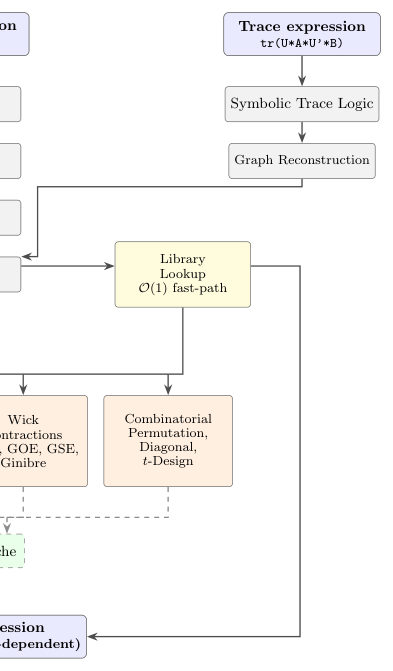
Summary. The authors present IntegrateUnitary.jl, a new Julia package designed for the symbolic integration of random matrix ensembles. It automates the complex Weingarten calculus and Wick contractions needed for quantum information theory, offering a scalable and high-performance alternative to existing Python and Mathematica tools.
Why it may be interesting. This tool automates the complex combinatorial task of calculating averages over random unitaries, which is essential for studying quantum chaos, scrambling, and entanglement in many-body dynamics and random quantum circuits.
Main problem. The need for an efficient, automated, and symbolic tool to perform integration over the Haar measure of various compact groups and random matrix ensembles, which is computationally difficult due to the combinatorial complexity of Weingarten calculus.
Main result. The development of IntegrateUnitary.jl, a Julia package that provides a unified, high-performance implementation for symbolic integration over $U(d)$, $O(d)$, $Sp(d)$, and other ensembles, achieving significant speedups over existing tools like Haarpy and RTNI.
Method. The package utilizes the Symbolics.jl ecosystem, implementing Weingarten calculus, Wick contractions, the Murnaghan-Nakayama rule, and symplectic-orthogonal duality, alongside a coordinate-free symbolic trace interface.
Model / system. The software targets random matrix ensembles including Unitary, Orthogonal, and Symplectic groups, Ginibre ensembles, Circular ensembles (CUE, COE, CSE), permutation groups, and unitary $t$-designs.
Key observables. Polynomial moments of matrix entries, trace-polynomial integrals, purity, entanglement entropy, and quantum information metrics.
Important parameters / regimes. Dimension $d$ (treated as a symbolic variable), polynomial degree $k$, and the large-$d$ asymptotic limit.
Assumptions / limitations. Exact symbolic integration is limited to polynomial degrees $2k \lesssim 12$; certain workflows require concrete integer dimensions; $SU(d)$ support is currently limited to balanced polynomials.
Figures summary. Figure 1 illustrates the software architecture and data flow for scalar and trace expressions; various tables compare performance benchmarks and scaling against other software packages.
Paper structure. The paper introduces the computational problem, describes the software architecture and core mathematical engines (Weingarten, Wick, etc.), presents performance benchmarks against existing tools, and demonstrates applications in quantum information tasks.
Symbolic integration over the Haar measure of compact groups is a computational cornerstone in quantum information science and random matrix theory. We present \texttt{IntegrateUnitary.jl}, a comprehensive Julia package for computing exact expectations of polynomial functions over a wide range of compact groups ($U(d)$, $O(d)$, $Sp(d)$, and $SU(d)$ for balanced polynomials), circular and Gaussian ensembles, Ginibre ensembles, permutation groups, random pure states, and unitary $t$-designs. The package provides a fully open-source implementation of the Weingarten calculus and Wick contractions with broad symbolic-$d$ support for entry-wise and trace-polynomial integrals, while selected workflows currently require concrete integer dimensions (including higher pure trace moments $|\mathrm{tr}(U)|^{2k}$ for $k > 1$ and HCIZ with \texttt{SymbolicMatrix} inputs, and direct matrix-valued integration of \texttt{SymbolicMatrix}/\texttt{SymbolicMatrixProduct} expressions), automatic asymptotic expansions, a high-level symbolic trace interface that reconstructs Weingarten graphs from index-free expressions, and a bridge to \texttt{ITensors.jl} for tensor network averaging. We discuss the underlying algorithms, including the Murnaghan-Nakayama rule and symplectic-orthogonal duality, and demonstrate that the package efficiently handles high-degree moments and quantum information metrics.
Authors: Yiying Chen, Lingxia Zhang, Yanzheng Zhu, Kaiyan Yang, Xiao Zeng, Zizhu Wang
Type: theory · Category: numerical methods · PDF: https://arxiv.org/pdf/2605.23300v1
Analysis basis: full PDF text, analyzed in chunks
Topic relevance: entanglement & information structure 3/5 · analog quantum simulation 2/5 · exotic spin models in light-matter 2/5 · quantum measurements 2/5
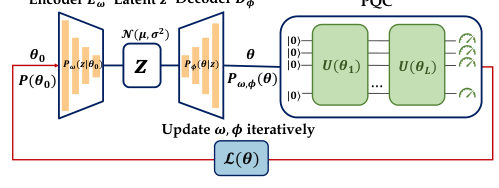
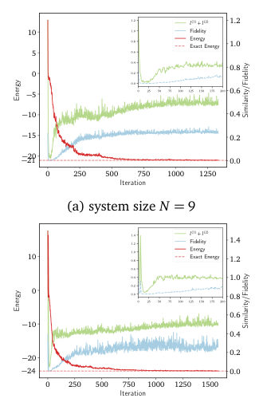
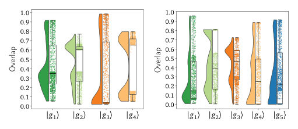
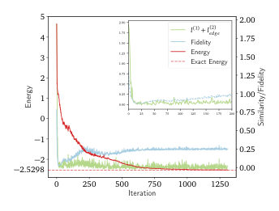
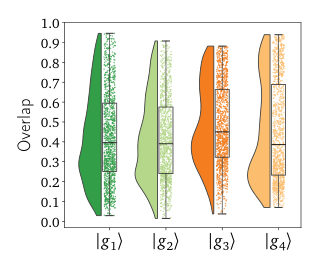
Summary. The paper introduces a generative quantum circuit framework designed to learn the entire degenerate ground-state space of many-body Hamiltonians. By optimizing an energy-diversity objective using local observables, the method avoids mode collapse and accurately captures the geometric structure of the ground-state manifold. It demonstrates high robustness to sampling noise and successful application to various spin-chain models.
Why it may be interesting. This work provides a scalable way to explore degenerate manifolds and topological ground spaces using local measurements, which is highly relevant for characterizing many-body phases in both simulated and near-term quantum hardware.
Main problem. Recovering the full degenerate ground-state manifold of quantum many-body systems, which is challenging because existing methods often capture individual states but fail to represent the entire degenerate space without mode collapse.
Main result. The proposed hybrid generative quantum circuit successfully reproduces the full span and internal feature-space geometry of degenerate ground spaces in the Majumdar-Ghosh, AKLT, and spin-1 XXZ models, even under finite-shot noise.
Method. A hybrid framework combining a classical generative model (VGON) with a parameterized quantum circuit (PQC), using an energy-diversity loss function based on local observable correlators to prevent representation collapse.
Model / system. The study benchmarks on several 1D spin models: the spin-1/2 Majumdar-Ghosh model, the spin-1 AKLT model (with symmetry-encoded qutrit mapping), and the spin-1 XXZ chain at the first-order phase transition point.
Key observables. Local one-body magnetizations, nearest-neighbor two-body Pauli correlations, effective rank of the state matrix, ground-space overlap score, and principal angles.
Important parameters / regimes. Energy-diversity weight (lambda_2) annealing schedule, shot-adaptive training budget, and relative error tolerance (epsilon) for rank determination.
Assumptions / limitations. Benchmark certification is limited to system sizes accessible by Exact Diagonalization; numerical rank determination assumes a fixed relative error tolerance.
Figures summary. Figure 1 shows the generative architecture; Figure 2 illustrates training dynamics (energy vs. fidelity); Figures 8-9 show circuit ansatze for spin-1/2 and spin-1; Figures 10-15 present overlap decompositions and cosine-similarity heatmaps comparing exact vs. generated states.
Paper structure. Introduction to the degeneracy problem, description of the hybrid generative architecture and energy-diversity objective, detailed implementation of circuit ansatze for different spin models, benchmarking results on MG, AKLT, and XXZ models, and analysis of robustness under finite-shot noise.
Searching for degenerate ground spaces in quantum many-body systems is central to understanding spontaneous symmetry breaking and topological order. Although existing numerical methods can approximate individual ground states with high accuracy, recovering the full degenerate space remains a substantial challenge. Here we tackle this problem using a hybrid generative quantum circuit that combines a classical generative model with an expressive parameterized quantum circuit (PQC). The classical model learns a distribution over PQC parameters, enabling the sampling of an ensemble of ground states, while the PQC ensures compatibility with quantum hardware. To promote both low energy and state diversity, we define an energy-diversity objective composed of an energy-minimization term and cosine-similarity penalties derived from local observable correlators. These local descriptors provide a scalable, measurement-efficient means of distinguishing distinct ground states. We benchmark the framework on the Majumdar-Ghosh model, the Affleck-Kennedy-Lieb-Tasaki model, and the spin-1 XXZ chain, which realize distinct mechanisms of degeneracy. In all cases, the method produces a diverse ensemble whose linear span accurately reproduces the target ground space, in some instances, it identifies an approximately orthogonal basis within the learned ensemble. We further show that the framework remains robust under shot-based estimation and can still recover the degenerate ground space with a reduced measurement budget.
Authors: Anton Montag, Tomoki Ozawa
Type: theory · Category: other · PDF: https://arxiv.org/pdf/2605.23613v1
Analysis basis: full PDF text, analyzed in chunks
Topic relevance: non-equilibrium dynamics 3/5 · analog quantum simulation 2/5 · correlated / nonlocal dissipation 2/5 · methods for driven-dissipative 2/5
Summary. This paper develops the theory of Landau levels in the presence of a complex-valued magnetic field. It demonstrates that such fields lead to complex energy spectra and spiral-shaped particle trajectories. The findings suggest new ways to implement non-Hermitian physics in platforms like topoelectrical circuits and ultracold atoms.
Why it may be interesting. This work is highly relevant for researchers in open quantum systems and many-body dynamics as it provides a fundamental framework for understanding how non-Hermiticity (via complex magnetic fields) alters topological features and transport properties like the Lorentz force.
Main problem. The paper investigates the properties, topology, and dynamics of Landau levels in two-dimensional systems subject to a complex-valued perpendicular magnetic field.
Main result. The authors derive complex-valued, highly degenerate energy spectra and show that the imaginary part of the magnetic field induces a drag force, turning circular cyclotron motion into spiral trajectories.
Method. The study uses an algebraic approach with creation and annihilation operators, a biorthogonal formalism for non-Hermitian eigenstates, and numerical simulations of a non-Hermitian Harper-Hofstadter lattice model.
Model / system. A 2D system of charged particles in a complex magnetic field, modeled both in the continuum using a non-Hermitian Hamiltonian and on a square lattice via a non-Hermitian Harper-Hofstadter model.
Key observables. Complex eigenenergies, biorthogonal eigenstates, wave packet center-of-mass trajectories, and effective mass.
Important parameters / regimes. Complex magnetic field B = Re(B) + iIm(B), cyclotron frequency, magnetic length, and wave packet width.
Assumptions / limitations. The analysis assumes a semiclassical framework for wave packet dynamics and requires Re(B) > |Im(B)| for wavefunction square-integrability in the Landau gauge.
Figures summary. Figure 1 shows complex eigenenergies and numerical right eigenstates; Figure 2 displays wave packet trajectories (spiraling motion); Figure 3 shows effective mass as a function of wave packet width.
Paper structure. The paper begins with the formulation of the continuum theory and algebraic derivation of complex Landau levels, moves to the analysis of gauge dependence and localization, then transitions to lattice model simulations and semiclassical wave packet dynamics, and concludes with an investigation of effective mass dependence.
We formulate non-Hermitian Landau levels in two-dimensional systems under a complex perpendicular magnetic field. In the symmetric gauge, we derive their discretely spaced, highly degenerate complex spectra and biorthogonal eigenstates, and clarify the role of non-unitary gauge transformations. A non-Hermitian Harper-Hofstadter lattice model confirms the continuum theory and reveals Gaussian wave packet dynamics governed by semiclassical equations with a complex Lorentz force, pointing to possible experimental realizations of complex magnetic fields.
Authors: Daniel Burgarth, Robin Hillier, Davide Lonigro, Leonhard Richter
Type: theory · Category: other · PDF: https://arxiv.org/pdf/2605.23734v1
Analysis basis: full PDF text, analyzed in chunks
Topic relevance: non-equilibrium dynamics 3/5 · Tavis-Cummings & cavity-many-emitter 2/5 · methods for driven-dissipative 2/5 · scars & prethermalization 2/5
Summary. This paper extends the Floquet-Magnus expansion from bounded to unbounded operators, allowing for a rigorous treatment of periodically driven quantum systems. It introduces a new construction that provides explicit error bounds in the high-frequency limit even when the expansion series itself does not converge. The method is successfully demonstrated on the quantum Rabi model and the driven harmonic oscillator.
Why it may be interesting. This provides a rigorous mathematical foundation for using effective Hamiltonians in quantum optics and many-body physics, where unbounded operators (like position/momentum or photon number) are standard, and offers improved error scaling in the high-frequency regime.
Main problem. The standard Floquet-Magnus expansion is mathematically restricted to bounded Hamiltonians, making it difficult to rigorously treat physically relevant unbounded operators in periodically driven systems.
Main result. The authors develop a nonperturbative framework that extends the Floquet-Magnus expansion to a broad class of unbounded Hamiltonians, providing explicit error bounds that vanish in the high-frequency limit without requiring the convergence of the expansion series.
Method. An iterative integration-by-parts technique and a constructive framework based on Kato's theory of evolution equations are used to derive effective Hamiltonians and error estimates.
Model / system. The framework is applied to the quantum Rabi Hamiltonian in the interaction picture and a periodically driven quantum harmonic oscillator.
Key observables. Unitary propagators and the difference between exact and approximated dynamics.
Important parameters / regimes. The driving period (T), the high-frequency limit (T approaching 0), and the energy scale defined by a reference self-adjoint operator (H0).
Assumptions / limitations. The Hamiltonians must satisfy specific regularity and stability properties (Properties A.1-A.9 and C.1-C.7), including relative boundedness and well-defined commutator structures.
Paper structure. The paper introduces the problem of unbounded operators, presents a nonperturbative integration-by-parts framework, establishes theorems for error control and propagator difference, proves the construction reproduces the Floquet-Magnus expansion, and demonstrates the method via the quantum Rabi and driven harmonic oscillator models.
The Floquet-Magnus expansion is a widely used tool to derive effective descriptions of time-periodic quantum systems by approximating their dynamics with a time-independent Hamiltonian. However, its standard formulation is, strictly speaking, restricted to bounded Hamiltonians. In this work, we extend its definition and analysis to a broad class of time-periodic unbounded Hamiltonians. Our approach is based on an a priori distinct nonperturbative framework for the construction of effective Hamiltonians, which we show to reproduce the Floquet-Magnus expansion. A particular strength of our framework is that it allows us to prove that the resulting effective dynamics approximates the original time evolution propagators to arbitrary order in the high-frequency limit without requiring convergence of the Floquet-Magnus expansion, a condition that is already highly restrictive even in the bounded setting. We illustrate the scope of the method on representative models: the quantum Rabi Hamiltonian in the interaction picture, and the periodically driven quantum harmonic oscillator.
Authors: Hiroshi Yamauchi, Sophie Colleen Stearn, Samuel Tovey
Type: theory · Category: quantum information and computing · PDF: https://arxiv.org/pdf/2605.23455v1
Analysis basis: full PDF text, analyzed in chunks
Topic relevance: quantum measurements 3/5 · spintronics-quantum-optics interface 3/5 · methods for driven-dissipative 2/5
Summary. This paper proposes a method to reconstruct time-varying 2D magnetic fields by combining local quantum Hamiltonian learning with sequential Bayesian updates. Using NV-center spin-1 dynamics as a model, the authors demonstrate that while spatial structures can be recovered accurately, estimating global interaction parameters remains challenging due to parameter degeneracy and bias.
Why it may be interesting. It integrates Quantum Hamiltonian Learning with spatiotemporal Bayesian filtering, addressing the complex task of reconstructing global many-body parameters (J) and local fields simultaneously in a dynamic setting.
Main problem. The sequential spatiotemporal reconstruction of a dynamic, 2D magnetic field from local, noisy, and overlapping observations using quantum sensors.
Main result. The framework successfully recovers large-scale spatial structures (maze-like patterns) with low RMSE, though the global coupling parameter J remains partially identifiable and biased.
Method. A sequential Bayesian inference framework using a particle-based Monte Carlo estimator and an adaptive control policy based on expected information gain and leakage-aware scoring.
Model / system. A nitrogen-vacancy (NV) center spin-1 system in diamond, modeled via a rotating-frame Hamiltonian that includes local magnetic field detuning, transverse strain, and long-range dipolar interactions.
Key observables. Ramsey-type readout operators, Classical Fisher Information (CFI), Quantum Fisher Information (QFI), and spin-1 leakage to the |-1> state.
Important parameters / regimes. Local magnetic field magnitudes (Bt), shared dipolar coupling parameter (J), and interrogation time (T).
Assumptions / limitations. The study uses a numerical 'trusted-simulator' (exact diagonalization) rather than hardware-in-the-loop; it assumes an idealized binomial shot model for measurements.
Figures summary. Figure 1 shows the transition from random prior to reconstructed field; Figure 2 shows decay of expected information gain; Figure 3 shows local convergence; Figure 4 tracks coupling J estimation; Figure 6 shows the impact of scan geometry (H vs V vs H+V).
Paper structure. The paper defines the spatiotemporal reconstruction problem, introduces the NV spin-1 Hamiltonian model, details the sequential Bayesian/SMC framework and adaptive control policy, presents numerical results on field reconstruction and coupling estimation, and discusses metrological trade-offs and limitations.
We propose a quantum-Hamiltonian-learning-based sequential reconstruction framework for dynamic two-dimensional magnetic fields using a local likelihood model derived from a nitrogen-vacancy center spin-1 Hamiltonian. The latent field is not observed directly; instead, local measurements are generated through nitrogen-vacancy spin dynamics governed by local magnetic-field values and a shared dipolar coupling parameter. Sequential Bayesian updates over overlapping scan windows are combined with temporal posterior propagation to reconstruct the evolving field. Numerical experiments on synthetic maze-like magnetic-field sequences show that the proposed method recovers the dominant spatial structure, achieving a root-mean-square error of \(7.037\times10^{-7}\,\mathrm{T}\) at the final frame. Adaptive diagnostics show decreasing expected information gain and stable local convergence. Fisher-information and leakage diagnostics reveal a sensitivity--leakage tradeoff under long-interrogation controls, and the implemented adaptive policy incorporates leakage-aware control scoring while leaving the likelihood itself unchanged. Combined horizontal and vertical scans improve reconstruction relative to single-direction acquisition. The shared coupling parameter \(J\) is only partially identifiable: its posterior becomes narrow but remains frame-dependent and biased. At the final checkpoint, the coupling posterior reaches \(J_{\rm std}=87.0\,\mathrm{Hz}\), close to a finite-time product-state reference benchmark of \(73.3\,\mathrm{Hz}\), while remaining \(3.35\times\) above a gain-extrapolated ideal-state benchmark. The posterior mean, however, remains biased by \(326.9\,\mathrm{Hz}\), indicating that posterior concentration alone does not imply unbiased coupling identifiability.
Authors: Florian Bönsel, Flore K. Kunst, Federico Roccati
Type: theory · Category: other · PDF: https://arxiv.org/pdf/2605.23625v1
Analysis basis: full PDF text, analyzed in chunks
Topic relevance: correlated / nonlocal dissipation 3/5 · non-equilibrium dynamics 2/5 · non-equilibrium universality 2/5
Summary. This paper demonstrates that the spatial extent of atom-photon bound states in fractal photonic lattices is governed by the fractal's walk dimension rather than standard effective mass. It provides a generalized scaling law for localization and shows how the near-field profile reflects the underlying fractal transport properties.
Why it may be interesting. It extends waveguide QED to non-translational invariant geometries and establishes a direct link between quantum bound-state profiles and classical anomalous diffusion exponents.
Main problem. Investigating how the fractal geometry of a photonic bath reshapes the localization length and spatial profile of atom-photon bound states.
Main result. The far-field localization length scales as xi ~ Delta^(-1/dw), where dw is the walk dimension of the fractal, and the near-field amplitude follows an algebraic scaling related to fractal transport properties.
Method. Analytical derivation using the heat kernel and saddle-point approximation of the Green's function, complemented by numerical exact diagonalization on various fractal graphs.
Model / system. A two-level emitter coupled to a photonic bath arranged in self-similar fractal lattices (e.g., Sierpinski gaskets, carpets, and Vicsek graphs) described by a tight-binding Hamiltonian.
Key observables. Localization length (xi), detuning (Delta), near-field amplitude difference, and fractal dimensions (dw, ds, df).
Important parameters / regimes. Detuning from the spectral edge (Delta), walk dimension (dw), spectral dimension (ds), and the distinction between finitely ramified and infinitely ramified fractals.
Assumptions / limitations. The bath Hamiltonian is rendered Laplacian-like by compensating for connectivity inhomogeneities with on-site potentials; the study focuses on the regime near the lower spectral edge.
Figures summary. Figure 1 compares regular vs. fractal lattices and their dispersion/diffusion; Figure 4 shows the rescaled localization length scaling with detuning; Figure 5 illustrates near-field amplitude scaling for different fractal types.
Paper structure. The paper introduces the problem of atom-photon bound states in non-periodic media, develops an analytical framework using the heat kernel, provides numerical validation on various fractal geometries, and discusses the scaling of near-field and far-field regimes.
We study atom-photon bound states seeded by two-level emitters coupled to self-similar photonic lattices. By expressing the photonic Green's function through the heat kernel, we show that the far-field localization length obeys $ξ\sim Δ^{-1/d_w}$, with the detuning $Δ$ from the lower spectral edge and the walk dimension $d_w$ of the underlying fractal. This scaling is controlled by anomalous diffusion and does not rely on translational invariance or a band-edge effective-mass approximation. Exact diagonalization on Sierpiński gaskets, pyramids, Vicsek graphs, and Sierpiński carpets confirms the far-field prediction once the bath Hamiltonian is rendered Laplacian-like by compensating the local inhomogeneity in the connectivities with on-site potentials. In the near field, the bound-state amplitude exhibits an additional algebraic variation. For nested finitely ramified fractals, the corresponding exponent agrees with the classical resistance/ first-passage scaling, whereas Sierpiński carpets display clear deviations from this simple law. Our results extend structured-bath waveguide QED to self-similar non-periodic geometries and connect bound-state profiles to transport exponents of the underlying fractal lattice.
Authors: Tatsuro Yuge, Ryo Okamoto, Takumi Sannomiya, Keiichirou Akiba
Type: theory · Category: quantum information and computing · PDF: https://arxiv.org/pdf/2605.23335v1
Analysis basis: full PDF text, analyzed in chunks
Topic relevance: entanglement & information structure 3/5 · interference shaping light 2/5 · quantum measurements 2/5
Summary. This paper develops a theoretical framework to quantify spatial entanglement between electrons and photons in coherent cathodoluminescence. It classifies the system into wave-like, particle-like, and classical regimes based on beam coherence and photon bandwidth. The findings provide a roadmap for using electron microscopy as a platform for quantum-enabled imaging and sensing.
Why it may be interesting. It provides a bridge between electron microscopy and quantum optics by treating electron-photon scattering as a source of continuous-variable entanglement, relevant to quantum imaging and sensing.
Main problem. Quantifying the degree and nature of electron-photon spatial entanglement in coherent cathodoluminescence (CL) and determining how it depends on electron-beam properties like transverse coherence.
Main result. The study identifies three distinct entanglement regimes (wave-like, particle-like, and classical) and reveals that strong spatial entanglement emerges when the electron's transverse coherence length is large and the photon spectral width is optimized.
Method. A theoretical framework that reconstructs the scattered electron-photon state from the luminescence spectrum and evaluates entanglement using subsystem purity and an EPR-type uncertainty criterion.
Model / system. A single-electron beam interacting with a radiation field (specifically transition radiation) in a weak-coupling regime, modeled using a Hamiltonian for free electrons and photons with an interaction term.
Key observables. Subsystem purity (P_sc), EPR-type uncertainty product (D^2_sc), and joint probability distributions for position and wavevector.
Important parameters / regimes. Electron transverse and longitudinal coherence lengths (L_el_perp, L_el_parallel), photon spectral width (Delta_lambda_ph), and electron transverse wavenumber width (Delta_q_el_perp).
Assumptions / limitations. The system is translationally invariant in the transverse plane, the interaction is in the weak-coupling regime, and the momentum change of the electron is much smaller than its incident momentum.
Figures summary. Fig 1 illustrates the CL process; Fig 2 maps the entanglement regimes (A, B, C) against beam parameters; Fig 5 shows longitudinal entanglement via purity; Fig 6 shows joint probability distributions; Fig 7 examines the impact of phase uncertainty on the EPR criterion.
Paper structure. The paper begins by defining the interaction model and state reconstruction framework, proceeds to classify entanglement regimes using purity and EPR criteria, analyzes the influence of electron beam coherence, and concludes with an investigation into the impact of unknown phase factors.
Electron-photon quantum entanglement in an electron microscope paves the way for a new quantum platform, enabling the integration of quantum functionalities into electron microscopy and opening opportunities for quantum imaging and quantum sensing at the nanoscale. To realize such a platform, it is crucial to understand the degree and nature of electron-photon entanglement in cathodoluminescence (CL). However, its dependence on electron-beam properties, particularly transverse coherence, remains unclear. Here, we present a theoretical framework describing the quantum state of an electron-photon pair generated in coherent CL, specifically for transition radiation. By expressing the scattered state directly via the luminescence spectrum, we evaluate the entanglement using both subsystem purity and an Einstein-Podolsky-Rosen-type criterion. These two measures enable a clear distinction between wave-like, particle-like, and classical regimes in terms of spatial and momentum entanglement in the electron-photon system. Our analysis identifies the roles of the electron's transverse and longitudinal coherence, as well as the photon's spectral width, and reveals the conditions under which strong spatial entanglement emerges. This unified perspective clarifies the nature of electron-photon quantum correlations in coherent CL, leading to quantum-enabled functionalities in electron microscopy.
Authors: Jiajun Chen
Type: theory · Category: quantum gases · PDF: https://arxiv.org/pdf/2605.23206v1
Analysis basis: full PDF text, analyzed in chunks
Topic relevance: non-equilibrium dynamics 3/5 · non-equilibrium universality 2/5 · scars & prethermalization 2/5
Summary. This paper explores how Yukawa-type screened interactions affect the formation of Bose-stars. It demonstrates that a finite interaction range delays the condensation process and results in less compact, broader density profiles. The findings are supported by both analytical kinetic theory and numerical simulations.
Why it may be interesting. This work provides insights into how modifying the range of interactions affects the relaxation dynamics and structural stability of many-body bosonic systems, which is highly relevant to the study of non-equilibrium dynamics in ultracold gases.
Main problem. Investigating how finite-range Yukawa interactions modify the formation, internal structure, and condensation timescale of Bose-stars compared to the standard long-range Newtonian case.
Main result. Yukawa screening broadens the Bose-star density profile and systematically delays the condensation timescale by suppressing infrared kinetic relaxation.
Method. The study uses analytical derivation of a screened kinetic condensation formula and fully dynamical pseudospectral simulations with imaginary-time relaxation for ground-state profiles.
Model / system. A Yukawa-Schrödinger-Poisson (YSP) system representing a self-gravitating bosonic gas (such as axion dark matter) with a screened gravitational potential.
Key observables. Bose-star density profiles, condensation timescale, and projected density field snapshots.
Important parameters / regimes. Yukawa screening mass (mu_Y), boson mass (m), and the dimensionless screening parameter (e*mu_Y).
Assumptions / limitations. The Yukawa interaction is treated phenomenologically as a screened gravitational potential; the system is studied in a periodic box with homogeneous and isotropic initial conditions.
Figures summary. Figure 1 shows the broadening of static Bose-star profiles with increasing screening; Figure 2 displays density field snapshots demonstrating delayed formation; Figure 3 shows the evolution of density profiles; Figure 4 shows the evolution of maximum density; Figure 5 compares predicted vs. measured condensation times.
Paper structure. The paper introduces the YSP model, derives an analytical formula for screened kinetic condensation, presents static solutions for Bose-star profiles, details dynamical pseudospectral simulations, and concludes by validating the analytical predictions against numerical results.
We study Bose-star formation in a Yukawa-Schrödinger-Poisson (YSP) system. A finite interaction range suppresses the infrared kinetic relaxation responsible for Bose-star condensation, modifying both the equilibrium Bose-star structure and the condensation timescale. We derive a screened kinetic condensation formula in which the ordinary gravitational Coulomb logarithm is replaced by a finite Yukawa transport logarithm. Static YSP solutions show that Yukawa screening broadens the Bose-star density profile relative to the ordinary Newtonian soliton. Fully dynamical pseudospectral simulations with homogeneous and isotropic initial conditions demonstrate that Yukawa screening systematically delays Bose-star condensation, in good agreement with the screened kinetic prediction after fitting a single overall normalization parameter.
Authors: Dongnan Xia, Cunhua Pan, Hong Ren, Dongsheng Sui, Qihao Peng, Jiangzhou Wang
Type: theory · Category: other · PDF: https://arxiv.org/pdf/2605.23214v1
Analysis basis: full PDF text, analyzed in chunks
Topic relevance: Rydberg arrays 3/5 · methods for driven-dissipative 2/5 · quantum measurements 1/5

Summary. This paper analyzes the performance of Rydberg-based quantum receivers in wireless networks using stochastic geometry. It reveals a fundamental tradeoff where the advantage of low quantum noise is lost in dense networks due to nonlinear distortion from aggregate interference.
Why it may be interesting. It bridges microscopic open quantum system dynamics (Lindblad equation) with macroscopic network theory, exploring how nonlinearities in quantum transducers affect large-scale system reliability.
Main problem. Determining whether the high sensitivity of Rydberg Atom Quantum Receivers (RAQRs) translates to improved network-level reliability in dense wireless deployments, specifically considering the impact of nonlinear distortion caused by aggregate interference.
Main result. RAQRs outperform conventional receivers in sparse, noise-limited networks, but in dense networks, nonlinear distortion (Bussgang distortion) can cause RAQR performance to fall below that of conventional receivers.
Method. The authors use a stochastic geometry approach with a Poisson Point Process, applying Bussgang decomposition to linearize the third-order nonlinear atomic response and deriving analytical expressions for coverage probability.
Model / system. A four-level ladder-type Rydberg atomic system (|1> to |4>) interacting with RF fields, modeled via the Lindblad master equation and a third-order complex baseband model including linear gain and cubic nonlinearity.
Key observables. SINR (Signal-to-Interference-plus-Noise Ratio), coverage probability, and effective noise.
Important parameters / regimes. Base station density (lambda_b), antenna array size (M_r), nonlinearity ratio (|c3/c1|), and path-loss exponent (alpha).
Assumptions / limitations. The input signal is assumed to be a circularly symmetric complex Gaussian process, and the network is modeled as a homogeneous Poisson Point Process.
Figures summary. Comparison of 133Cs and 85Rb performance; coverage probability vs. SINR threshold for various densities; impact of array scaling (M_r) and receiver correlation on coverage.
Paper structure. The paper moves from a microscopic atomic master equation to a macroscopic network-level coverage analysis, establishing a nonlinear baseband model, applying linearization techniques, and validating results via Monte Carlo simulations.
Rydberg atomic quantum receivers (RAQRs) offer quantum-limited sensitivity and broadband tunability. It is not obvious whether this device-level advantage also improves network reliability, since in dense deployments, aggregate interference can push the atomic transducer out of its small-signal regime. This paper addresses the question by embedding the RAQR front end into a stochastic geometry (SG) coverage analysis. Starting with the atomic master equation and balanced coherent optical detection, we derive a third-order complex baseband model that retains both the linear gain and the leading cubic nonlinearity. A Bussgang decomposition converts the per-element nonlinear response into an equivalent linear gain plus a distance-dependent distortion noise. Using this equivalent model, we derive the post maximal-ratio combining (MRC) SINR and obtain tractable expressions for the conditional and spatially averaged coverage probabilities. The analytical results show that RAQRs outperform conventional receivers in sparse deployments. However, when the base station (BS) density becomes large, nonlinear distortion reduces this advantage and may make RAQRs perform worse. Simulation results validate the analytical expressions and confirm that the central design tradeoff is between linear gain and cubic nonlinearity.
Authors: Mathias Van Regemortel, Vincenzo Ardizzone, Eugenio Maggiolini, Armando Rastelli, Daniele Sanvitto, Thomas Van Vaerenbergh
Type: theory · Category: quantum information and computing · PDF: https://arxiv.org/pdf/2605.23286v1
Analysis basis: full PDF text, analyzed in chunks
Topic relevance: interference shaping light 3/5 · methods for driven-dissipative 3/5
Summary. This paper presents a new theoretical framework for predicting non-classical photon statistics in hybrid (Al)GaAs polaritonic integrated circuits. It demonstrates how engineered features like slow-light dispersion and MZI configurations can amplify photon antibunching and bunching. The work provides a roadmap for achieving quantum-level light manipulation on-chip.
Why it may be interesting. It provides a bridge between semiconductor device physics and quantum optics, offering a scalable framework for designing integrated quantum photonic circuits using nonlinear light-matter interactions.
Main problem. The lack of a quantitative theoretical framework to connect realistic waveguide parameters to measurable non-classical photon statistics in hybrid light-matter integrated circuits.
Main result. The development of a comprehensive framework (qPIC) that predicts quantum signatures like photon antibunching and demonstrates that slow-light engineering can amplify nonlinearities to achieve non-Gaussian statistics.
Method. Mapping pulsed nonlinear waveguide dynamics onto a bosonic quantum circuit representation using the Matrix Product State Density Operator (MPDO) framework and Kraus operators for dissipation.
Model / system. Hybrid (Al)GaAs light-matter integrated circuits supporting exciton-polaritons, modeled via a Kerr-type Hamiltonian in both single-waveguide MZI and multi-mode coupled-waveguide architectures.
Key observables. Photon-number output statistics, second-order correlation function g(2)(0) (antibunching and bunching), signal intensity, and intensity-intensity correlation matrices.
Important parameters / regimes. Rabi splitting, exciton interaction constant, group velocity (v_g), Hopfield coefficients, and local oscillator phase.
Assumptions / limitations. 1-D longitudinal wavevector approximation, pulse envelope invariance over time, and local Fock-space truncation.
Figures summary. Figure 1 shows polariton dispersion and derived group velocity; Figure 2 depicts the MZI setup; Figure 7 illustrates the impact of losses on signal intensity and correlations; Figure 8 provides 2D maps of intensity and g(2) as a function of phase and mixing angle.
Paper structure. The paper introduces the problem of quantifying quantum statistics in polaritonic circuits, presents a new theoretical framework (qPIC), analyzes single-waveguide MZI configurations, extends the model to integrated multi-mode circuits, and discusses the benefits of slow-light engineering and the impact of losses.
Strong light-matter coupling between a guided electromagnetic mode and an excitonic semiconductor transition gives rise to exciton-polaritons with optical nonlinearities far exceeding those of conventional photonic platforms. Utilizing these nonlinearities in the few-particle regime, where quantum signatures such as photon antibunching, sub-Poissonian statistics and non-trivial inter-mode correlations become accessible, is a central goal of integrated quantum photonics. Yet, a quantitative theoretical framework connecting realistic waveguide parameters to measurable non-classical photonic output is absent. Here, we present a comprehensive framework for predicting and benchmarking quantum photon statistics in polaritonic integrated circuits, using state-of-the-art experimentally achieved device parameters for (Al)GaAs waveguide platforms. By mapping the pulsed nonlinear waveguide dynamics onto a bosonic quantum circuit representation that explicitly incorporates dissipation, we identify experimentally accessible quantum signatures across two circuit configurations: a single waveguide in a free-space interferometric configuration and a fully integrated multimode coupled-waveguide circuit. We further show that slow-light engineering of the polariton dispersion offers a practical route to amplifying the effective nonlinearity, pushing quantum signatures beyond Gaussian statistics.
← Index · ← Previous · Next →